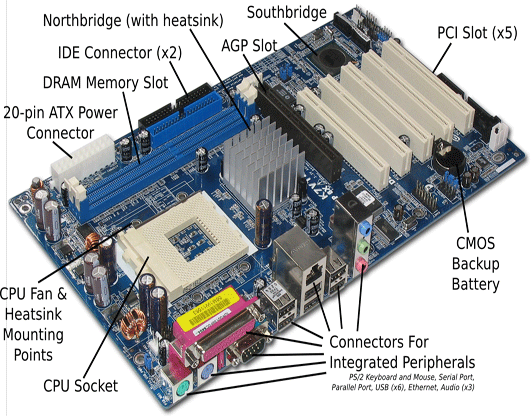
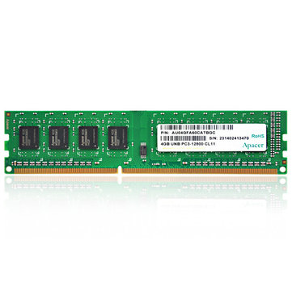
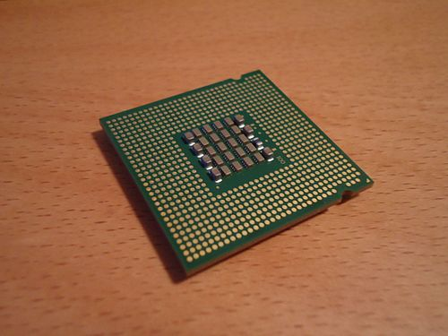
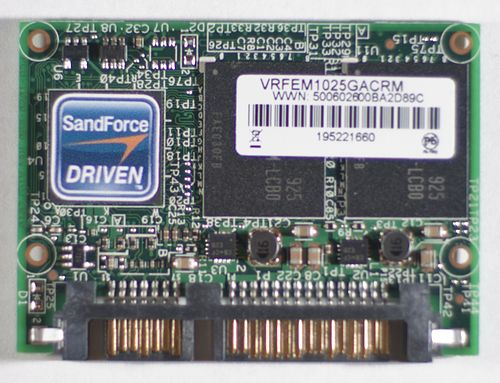
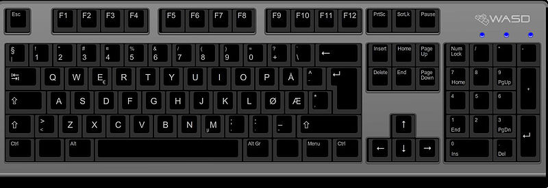
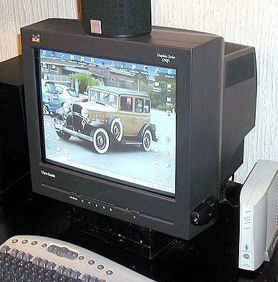
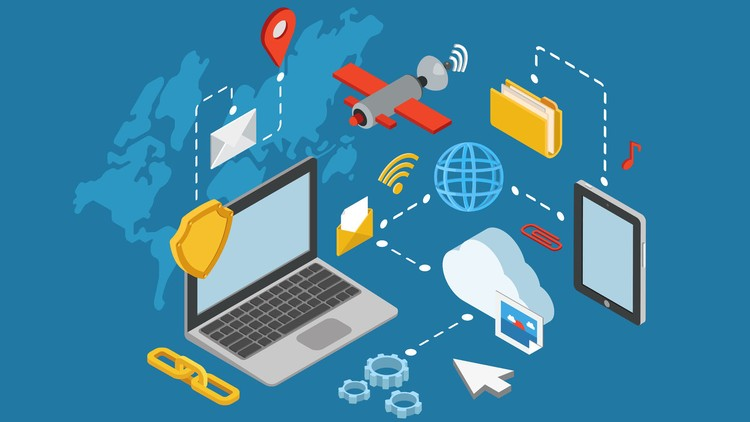

Hovedkort
Hovedkort er det viktigste kretskortet i en datamaskin. Alle større komponenter i datamaskinen må kobles til hovedkortet. Den viktigste enheten som kobles til er prosessoren. Det finnes flere fabrikanter av prosessorer, hvorav AMD og Intel regnes som de største for bruk i IBM-kompatible PC-er, dog VIA begynner å tre inn på markedet med laveffektsprosessorer for tynnklienter. Andre typer komponenter kan være minne, skjermkort, lydkort, USBkontroller, harddiskkontroller, osv., etter som maskinvare utvikles. På hovedkortet finnes BIOS-en som er ansvarlig for oppstart av datamaskinen, og generell konfigurasjon maskinvaresmessig.

Ram
RAM er en av de vesentligste delene i en datamaskin. Hvis det ikke er installert noe minne, vil datamaskinen nekte å starte. Det som skiller mellom ulike minner er blant annet teknologien, hastigheten og størrelse. Dette kapitlet behandler RAM-minnets funksjon og egenskaper. Det som her kalles RAM har mange synonyme navn som brukes i varierende grad. Begrepene internminne, primærminne og arbeidsminne har samme betydning. Eldre navn som RWM-minne (Read-Write Memory) forekommer også. Navnet RWM kommer av at det går an å lese og skrive til minnet. De første datamaskinene som kunne lagre data, brukte båndstasjoner. Der gikk det kun an å lese og skrive informasjon i en bestemt rekkefølge. Hvis informasjonen som skulle hentes, ble skrevet på slutten av båndet, var det ikke noe annet valg enn å spole frem dit. RAM-minnet behøver ikke å lese alt i samme rekkefølge og kan i stedet gå direkte til adressen der den forespurte informasjonen er lagret.

cpu
En CPU (engelsk forkortelse for Central Processing Unit), også kalt prosessor, er hovedregne-/prosesseringsenheten i en datamaskin som utfører instruksjonene gitt i et dataprogram, og den er det primære elementet som gjennomfører datamaskinens funksjoner. Prosessoren har typisk to logiske bestanddeler: styreenheten og utførelsesenheten. CPU har overordnet ansvar for alt som skal utføres, og delegerer eventuelt oppgaver til andre enheter. Primærlageret inneholder data som skal bearbeides, samt de programmene som for øyeblikket trenger å være hurtig tilgjengelig for prosessoren. Den tar for seg hver instruksjon i programmet i rekkefølge for å utføre systemets grunnleggende aritmetiske, logiske og innmatning-/utmatningsoperasjoner (input/output operations). Dette begrepet har vært i bruk i databransjen siden tidlig på 1960-tallet. Formen, designet og implementeringen av prosessorer har endret seg dramatisk siden de første eksemplarene, men deres grunnleggende operasjon er mye det samme.
De første prosessorene ble spesielt formet som en del av en større datamaskin, noen ganger den eneste av sitt slag og sin størrelse. Imidlertid har denne kostbare metoden for å designe spesialtilpassede CPUer for en bestemt oppgave i stor grad banet vei for utviklingen av masseproduserte prosessorer som er laget for ett eller flere formål. Denne standardiseringstrenden begynte generelt i tiden med transistor-stormaskiner og minidatamaskiner, og har raskt skutt fart med populariseringen av integrerte kretser fra midt på 1970-tallet. Integrerte kretser har gitt mulighet til å designe og produsere stadig mer komplekse CPUer på nanoskalaen. Både miniatyriseringen og standardiseringen av CPUer har medført økt tilstedeværelse av disse digitale enhetene i moderne liv langt utover den begrensede anvendelsen av dedikerte databehandlingsmaskiner. Moderne mikroprosessorer (med én integrert krets) finnes i alt fra biler og mobiltelefoner til leketøy.
Under bruk vil en CPU bli ganske varm og trenger ekstra kjøling for å klare å kvitte seg med varmen. Dette gjøres ved å ha et stykke metall (ofte kobber) ligge i kontakt med prosessoren slik at varmen overføres til metallet. Mellom CPUen og kjøleblokken skal det smøres et tynt lag kjølepasta som sikrer at kontakt mellom dem blir perfekt. Kjøleribben blir ofte avkjølt av en vifte.
«I midten av 1970-årene bygde supermaskinleverandøren Cray de første maskinene med flere CPU-er».

En typisk mikroprosessor - her undersiden av en Intel Pentium D prosessor.
ssd
Solid state drive (SSD) er et lagringsmedium som benytter flashminne istedenfor mekanisk/magnetiske plater til å lagre data. Siden den ikke har bevegelige deler, er søketiden raskere enn for en mekanisk harddisk og tåler bedre støt enn vanlige harddisker. SSD støyer minimalt. De er per i dag (2016) fortsatt dyrere per byte enn tradisjonelle harddisker, men prisen har falt gradvis de siste årene. En Samsung 500 GB 850 evo koster i 2016 rundt 1500 kr, sammenliknet med 830-modellen som kostet det dobbelte da den ble lansert.Grunnen til at prisen faller er at det brukes 3 celler slik at ting lagres 3-dimensjonalt, som gjør det mulig å produsere mindre SSD og få mer plass per tomme.
Dagens SSD bruker MLC NAND-based flash memory som betyr at selv ved strømbrudd/maskinen er slått av bevares dataene.
Tidligere var SLC og i dag Triple Level Cell (TLC) førstnevnte er dyrere men sistnevnte er billigere fordi man får lagret mere plass på SSD disken.
Men levetiden blir i teorien dårligere og samme gjelder ytelsen. Forskjellen er 3 bits per celle mot MLC som kun har 2 bits. Samsung 840 evo har i tillegg (Turbo write cache) på størrelse 3-12 GB avhenging av modell. Derfor merker man ikke ytelsen blir dårligere.

Viking Modular MO-297 SATA SSD
in/out
Mus
Det finnes i dag en rekke forskjellige trådløse mus som benytter seg av radiobølger, f.eks. Bluetooth eller proprietære protokoller, for å kommunisere med computeren. De fleste mus har i dag to knapper samt et hjul som kan brukes til flytte skjermbildet opp eller ned.
Apple har siden 1984 insistert på at kun én museknapp skulle være på deres datamus, og holdt fast på denne politikken fram til 2005 da firmaet lanserte multifunksjonsmusen «Mighty Mouse» (navngitt etter en tegnefilmfigur).
historie til datamus
Datamus ble oppfunnet i 1963 av Douglas Engelbart som da arbeidet med et datasystem kalt oN-Line. Ideen var at brukeren skulle kunne styre eller påvirke systemet, både maskinvare og dataprogrammer, med sin egen kropp, eksempelvis med anordning montert på en kroppsdel.
Den første datamus var laget av tre og hadde to hjul på undersiden som oversatte musens bevegelser til X og Y-aksen på skjermen – et prinsipp som Engelbart tok patent på. Den klosslignende musen med en liten rød knapp på oversiden ble i løpet av 1970-tallet forbedret av Bill English som skiftet ut hjulene med en kule som kunne rotere i alle retninger. Bevegelsene ble registrert av små hjul på innsiden av musen.
Denne typen datamus dominerte 1980-tallet og 1990-tallet, spesielt etter at Apple Computer i 1984 begynte å fremstille Macintosh-computeren. Det var den første populære hjemmecomputer som var utstyrt med mus. For en IBM-kompatibel PC med MS-DOS måtte brukeren lenge kjøpe en datamus selv som kom med et primitivt dataprogram, Pbrush som kunne male enkel grafikk.
Virkemåten til en mekanisk mus
tastatur
Et tastatur er et redskap som brukes for å taste ned tekst. Et tastatur finnes på en skrivemaskin, det kan være koblet til en datamaskin, eller man har tastatur på en skjerm, som for eksempel er tilfelle med nettbrett. Tastatur finnes i mange språkvarianter og med ulik plassering av tastene. De finnes også i forskjellige tekniske utførelser til forskjellige typer datamaskiner, som PC, Macintosh og andre varianter.
Membrantastatur
Membrantastatur er det vanligste, og er blant annet enerådende på bærbare pc’er. Først og fremst er de billigst å lage, men de er også mulig å lage langt tynnere enn mekaniske tastaturer, noe som er grunnen til at de er enerådende på bærbare pc’er, der minst mulig plass er noe av det viktigste. Opphavet til navnet har tastaturet fått fordi det er en fleksibel membran under alle tastene, og hver enkelt tast dytter på membranen, slik at det dannes kontakt med laget under membranen, og det dannes kontakt. Prosessen kalles lukking av en krets, og gjør at tastaturet registrerer tastetrykk, og akkurat hvor det kom fra.
Membrantastaturer har også ulemper. For det første må man trykke tasten helt ned for at det skal registres som et trykk, som på engelsk kalles «bottoming out», eller på norsk å «bunne». For det andre får man ikke noen tilbakemelding, i form av lyd, når tasten er trykket tilstrekkelig ned. Man får kun tilbakemelding ved at man kjenner at tasten er trykket så langt ned som det går an. For det tredje er faren for såkalte spøkelsestrykk. Altså at man trykker ned to taster samtidig, og at en tredje tast, som man ikke har trykket på, blir vist. Problemet går ut på at man kan få opp feil visning og manglende visning om man trykker ned flere taster samtidig. Siste ulempe er kortere levetid. Antatt levetid på membrantastaturer er 5-10 millioner trykk, mens det på mekanisk tastaturer er på 50 millioner trykk.
Mekaniske tastatur
Mekaniske tastaturer, slik vi kjenner dem i dag, har eksistert siden 80-tallet. Siden disse tastaturene er dyrere å produsere, er de i dag i mindretall og mest i bruk blant entusiaster. Tastaturtypen er aldri brukt på bærbare pc’er, da de bruker langt mer plass enn membran-tastaturene. Fordelene er imidlertid mange.
For det første fungerer de på en helt annen måte: hver eneste knapp har sin egen bryter i stedet for et membranlag som venter på å bli dyttet ned. Dette øker levetiden. For det andre har man mange flere muligheter til å skreddersy tastaturet akkurat slik man selv ønsker det[2] Særlig gjelder dette hvordan tastene skal være å trykke på og hva slags tilbakemelding tastene gir. Blant de mest populære tastene er Cherry MX-bryterne: Black, Red, Blue og Brown. Det som skiller disse tastene er forskjellig mengde kraft som trengs for å aktivere dem, samt type tilbakemelding når du presser tastene. Cherry MX Red og Black har lineær tilbakemelding. Altså merker du ikke selv når tastetrykket blir registrert. Cherry MX Black er mye tyngre å trykke ned enn Cherry MX Red. Cherry MX Brown og Blue har taktil tilbakemelding. På Blue tastene hører du et høyt klikk og merker aktiveringspunktet til bryteren når du trykker den ned. På Brown tastene hører du ikke noe klikk, men merker fortsatt aktiveringspunktet. Det finnes også andre typer brytere, både fra Cherry og andre produsenter, men disse er mye mindre brukt og nesten umulig å oppdrive i Norge. Det inkluderer Cherry MX Clear og Green, Cherry ML Black, White/Blue/Green/Yellow Alps, Buckling Spring og forskjellige Topre brytere.

Standard ISO-tastatur, med 105 taster, som er vanligst i verden i dag. Dette tastaturet er med norsk qwerty-oppsett.
Skjerm
En skjerm eller også bildeskjerm er et apparat som fremstiller visuell informasjon på en flate. Informasjonen overføres til skjermen i form av elektroniske signaler. Eksempler på slike skjermer er fjernsyns- og dataskjermer. Det finnes elektroniske skjermer i en mengde forskjellige størrelser og teknologiske konstruksjoner, alt fra bilderør med skjermer av glass til flatskjermer beregnet for digitale TV-signaler, monokrome radarskjermer, små displayer på mobiltelefoner og lommeregnere og projektorer som viser informasjonen på et lerret.
En TV-monitor er en TV-skjerm uten høyfrekvensdelen. Slike monitorer er bare laget for mottak av videosignal over kabel og ikke RF-signal fra antenner. Oppløsningen på monitoren må stå i forhold til kameraet. Samme monitortyper kan også gi fra seg lyd.
En skjerms størrelse blir tradisjonelt målt diagonalt fra hjørne til hjørne, og blir målt i tommer. De vanligste størrelsene er 14, 15, 17, 19, 21, 24, 25, 28, 32, 34, 40, 42, 46, 50, 55 og 60 tommer.
En fargeskjerm danner farger ved å blande de 3 grunnfarger rød, grønn og blå.

Nettverk
Et datanett, datanettverk eller bare nettverk er et system for kommunikasjon mellom to eller flere datamaskiner.
I tradisjonell forstand består et datanettverk av datamaskiner knyttet sammen ved hjelp av kabel eller ved hjelp av trådløs teknologi. I de senere år har teknologien gjort at det er kommet flere ting på markedet som kan knyttes opp til et nettverk i tillegg til tradisjonelle datamaskiner. Dette er alt fra nettverksskrivere og mobiltelefoner til toaletter og kjøleskap.
Opprinnelig ble nettverk satt sammen innad i bedrifter, forskningsinstitusjoner og i det militæret. Tanken var at sammenkoblinger av datamaskiner skulle gjøre utvekslingen av forskningsdata og annen informasjon lettere. Etterhvert har bruken av datanettverk blitt mer og mer utbredt.
Hvordan nettverket er satt sammen
Som tidligere nevnt består et nettverk av flere datamaskiner som er koblet sammen. I et kablet nettverk er maskinene knyttet sammen ved hjelp av én eller flere kabler. Disse kablene kan enten koble datamaskinene direkte til hverandre eller til en hub. Alternativt kan man koble datamaskinene, eller grupper av datamaskiner, til en switch. Oppgaven til switcher er å dirigere trafikk mellom de forskjellige datamaskinene i et nettverk.
For å koble sammen flere nettverk trenger man en router. Routere er den delen som binder sammen nettverk og sender datapakker til andre routere før de kommer frem til mottagernettverket og til slutt maskinen som skal ha informasjonen. Både routere og switcher bruker den tidligere nevnte IP-protokollen for å finne ut hvor datapakkene skal.
I mange hjem finnes det routere og switcher som er innebygget i samme enhet. Disse kalles noe feilaktig kun for routere. Det er router-delen som kobler hjemmenettverket til Internett, mens det er switch-delen som kobler sammen maskiner i huset til et eget nettverk. Dette er gjort for å gjøre det enklere for vanlige hjemmebrukere å sette opp å bruke nettverk.
